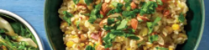

Easy Bacon, Corn and Leek Risotto

Ingredients
Method
-
Preheat oven to 220°C/200°C fan-forced. Boil the kettle. Slice leek. Drain sweetcorn. • In a large frying pan,
heat a drizzle of olive oil over a high heat. Cook diced bacon, leek and corn, break bacon up with a spoon until
starting to brown, 4-6 minutes. • Add garlic paste and arborio rice and cook, stirring, until fragrant,1-2
minutes. • Add the boiling water (2 cups for 2 people / 4 cups for 4 people), garlic & herb seasoning and
chicken-style stock powder, then bring to the boil.
-
Transfer risotto to large baking dish. • Cover tightly with foil. Bake until liquid is absorbed and rice is ‘al
dente’, 24-28 minutes. • When risotto is done, stir through grated Parmesan cheese and butter. If needed, add a
splash of water to loosen. Season to taste. TIP: 'Al dente' rice is cooked through but still slightly firm in the
centre.
-
While risotto is baking, roughly chop roasted almonds and set aside. • Thinly slice pear (see ingredients). • When
risotto is almost ready, combine spinach and rocket mix, pear and balsamic vinaigrette in a large bowl. Toss to
coat. Season to taste.
-
Divide bacon, corn and leek risotto between bowls. Sprinkle with torn parsley and chopped almonds. • Serve with
pear salad.